「Node;」は、ネットワークにおける「結節点」や「交点」を意味します。
圧倒的なスピードで進化するAIですが、それ自体はあくまでひとつの「ツール」に過ぎません。真に問われているのは、そのツールをソフトウェア開発の現場でどう使いこなし、いかにして価値を創り出すかです。そのためには、AIを単体で捉えるのではなく、開発手法、チーム構成、人間の役割など、あらゆる要素と掛け合わせるアプローチが不可欠となります。
本イベントが目指すのは、日本のプロダクト開発を世界最高峰へ導く「本物のプロフェッショナル」たちが集う中心です。傍観者や評論家は必要ありません。自ら深く思考し、泥臭く行動し、圧倒的な熱量でソフトウェア開発のパラダイムシフトに挑む「覚悟」を持つ者だけがここで交差し、次世代のスタンダードという新たな価値を創り出していく。
Node;は、そんな熱量に溢れた「結合点」です。
AIによって、ソフトウェア開発はどう変わるのか。
圧倒的なスピードで進化するAIは、ついに「実証実験」から「実用レベルのソフトウェア開発」へとフェーズを移行させました。
本イベントは、AI駆動開発を実践したいエンタープライズ企業に対し、AIと各要素を掛け合わせた講演やワークショップで構成されたオフライン型のカンファレンスイベントです。
AIというテクノロジーに、何を掛け合わせるのか。
様々な要素を掛け合わせながら、AI時代のソフトウェア開発の「今後の姿」と「実践知」を、皆さんと共に探求するイベントです。
Media Channel
エンタープライズ企業におけるAI駆動開発の最前線をお届けする公式動画チャンネルです。先進企業の事例や実践的なインサイト（知見）を継続的に発信します。
Your definitive video channel for enterprise AI-driven development insights.
Hands-on Workshop
最新のAIツールを実際に手を動かして学び、次世代の開発ワークフローを参加者と共に創り上げる実践的なハンズオン・ワークショップです。
Hands-on workshops to master AI tools and co-create next-generation development workflows.
Networking
業界を牽引するリーダー層と繋がり、各社のリアルな「実践知」を深く意見交換できる、ワンランク上の特別なネットワーキングの場をご提供します。
Exclusive networking to link with industry leaders and exchange practical knowledge.